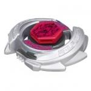

Wolf D125B
| Wolf D125B | |
|  | |
| Number: | BB-11 |
|---|---|
| System: | Metal System |
| Type: | Balance |
Contents
Face: Wolf
The Face on this Beyblade depicts Lupus, one of the 88 constellations in space.
Wheel: Wolf
- Weight: 36 Grams
The Wolf Wheel has two sides which consist of four close spikes that are meant for Smash Attack. On each side, the words "Wolf Wheel" are engraved. However, there are many problems with these metal protrusions that negate the use of Wolf; the largest one being that the spikes face counter-clockwise, which causes a massive decrease in stamina when the other, right-spin Beyblade hits it. Because of the counter-clockwise facing spikes, its potential to Smash Attack is also hindered because of its own spin direction, which causes the flatter side of the spikes hit to the opposing top.
It is generally agreed that Wolf would have held potential as an Attack Wheel if it had been left-spin-compatible, however, it remains that the spikes are so closely packed and not heavy enough that it could have failed in left-spin even at the beginning of the series. Because of this, Wolf has never had any use for Attack competitively, and Metal Wheels such as Blitz and VariAres should be used instead. Wolf also serves no purpose in Defense and Stamina, as the multiple contact points cause too much Recoil.
Track: Defense 125
| Weight: | 1.7 grams | Full Width: | 26.5 mm | Core Width: | 11 mm | Full Height: | 12.50 mm |
Defense 125 is similar to 125 and Tornado 125. Apart from the shifts in weight distribution and air resistance, there are few notable differences. The ring serves no significant defensive purposes. The track?s relatively low height prevents the opponent?s Bey from making any sort of consistent contact. D125 is an outclassed track for Stamina and Defense Customizations.
Use in Attack customization
D125 can be used to some extent in some Attack customizations. MF Gravity Perseus D125RF is one such combination.
Use in Stamina customization
If the 85, AD145 or 230 tracks are unavailable to you, D125 can be put to use in the customization Scythe Kronos D125WD.
Bottom: Ball
| Weight: | 0.6 gram | Full Width: | 15.82 mm | Tip Width: | 5.88 mm | Full Height: | 8.98 mm | Tip Height: | 5.97 mm |
Ball, as its name suggests, is shaped like a ball. This hemispherical shape provides a large area for the Bottom to make contact with the Stadium floor; hence increasing friction and making it more difficult to knockout. B?s shape also makes it likely to stay in the central areas of the Stadium, hence maximizing the customization?s distance from the Stadium exits. Due to its qualities, this bottom makes a decent choice for Defense Customizations. B can be used if WB is not available. However, both have been outclassed by CS, RSF and RS, all of which inherently have better Defense due to the inclusion rubber.
Since it is ball-shaped, this means that it still mostly only has one single point of contact with the stadium floor, and it wears evenly. For those reasons, the B Bottom is also a prized tip for Stamina testing, where variations in Bottom wear can cause considerable differences in performances.
Other Versions
- Wolf 105F - BB-12 Booster Wolf 105F (Blue)
- Wolf D125B - BB-20 BeyBattle Try Set (Red)
- Wolf 125SF - BB-21 Attack & Balance Reshuffle Set (Blue)
Gallery
-
Wolf Prototype
Overall
Wolf D125B is composed of predominately outclassed parts. D125 has found use, but does not make up for the lack of competitive parts. There is little to no reason to own the bey aside from collection purposes.